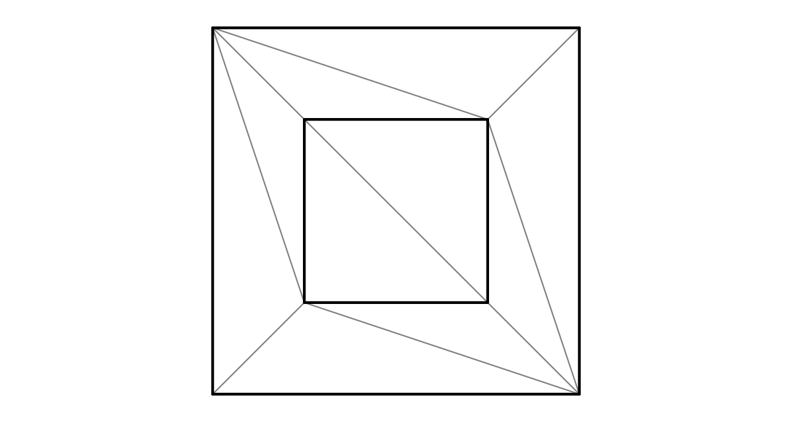
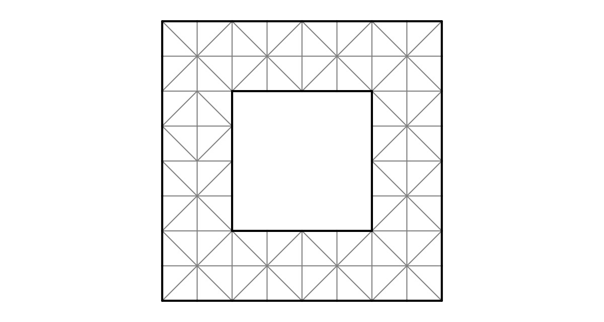

cdtr triangulates a planar straight line graph (PSLG): vertices, and constraint segments given as pairs of vertex indices. It binds the header-only CDT C++ library, and the result is a plain list of matrices and data frames.
Input and output
A square with a square hole is two closed rings. Vertices are
x and y, and the segments are s0
and s1, the 1-based start and end vertex of each.
x <- c(0, 1, 1, 0, 0.25, 0.75, 0.75, 0.25)
y <- c(0, 0, 1, 1, 0.25, 0.25, 0.75, 0.75)
s0 <- 1:8
s1 <- c(2, 3, 4, 1, 6, 7, 8, 5)
r <- cdt_triangulate(x, y, s0, s1)
names(r)
#> [1] "P" "T" "S" "depth"
#> [5] "n_input" "n_crossing" "input_map" "unrefined"
#> [9] "min_edge_length" "origin"The main components are P (vertices, a two-column
matrix), T (triangles, 1-based indices into P,
wound counter-clockwise), S (the fixed edges) and
depth. An RTriangle::pslg() can be passed to
cdt_pslg() instead.
A small plotting helper is used through this vignette.
plot_mesh <- function(m, ...) {
e <- cdt_edges(m)
plot(m$P, asp = 1, axes = FALSE, xlab = "", ylab = "", pch = ".", ...)
segments(m$P[e[, 1], 1], m$P[e[, 1], 2], m$P[e[, 2], 1], m$P[e[, 2], 2],
col = "grey50")
segments(m$P[m$S[, 1], 1], m$P[m$S[, 1], 2], m$P[m$S[, 2], 1], m$P[m$S[, 2], 2],
lwd = 2)
}
op <- par(mar = c(0.5, 0.5, 0.5, 0.5))
plot_mesh(r)
par(op)Depth: where a triangle sits
depth counts the constraint boundaries crossed
travelling in from outside. Outside the outer ring is 0, inside it is 1,
and the hole is 2. Nested rings alternate odd (inside) and even (hole).
It is found from the mesh alone, with no point-in-polygon test.
table(r$depth)
#>
#> 1 2
#> 8 2erase controls what is dropped. The default
"outer" removes triangles outside the outermost boundary
(as Triangle’s -p does), so hole triangles are
kept and have even depth. "holes" also removes the
even depths, which is what you want to get a polygon with its holes cut
out. "hull" keeps the whole convex hull.
sapply(c("hull", "outer", "holes"), function(e) {
nrow(cdt_triangulate(x, y, s0, s1, erase = e)$T)
})
#> hull outer holes
#> 10 10 8Holes can also be given as points, as in an
RTriangle::pslg()’s H. The region around each
point that is bounded by segments is erased, which is useful when you
know a point inside a hole but not the depth.
rh <- cdt_triangulate(x, y, s0, s1, holes = cbind(0.5, 0.5))
table(rh$depth)
#>
#> 1
#> 8Refinement
Ruppert refinement adds Steiner vertices to meet a maximum triangle area or a minimum angle.
r2 <- cdt_triangulate(x, y, s0, s1, max_area = 0.01, min_angle = 25,
erase = "holes")
table(r2$origin)
#>
#> input crossing steiner
#> 8 0 64
op <- par(mar = c(0.5, 0.5, 0.5, 0.5))
plot_mesh(r2)
par(op)origin says where each vertex came from:
"input", "crossing" (added where constraints
cross) or "steiner" (added by refinement).
Refinement cannot always reach its targets, for example where two
segments meet at a sharp angle. Instead of stopping silently, the result
reports what was left undone in unrefined, and
min_edge_length is the floor below which an edge is not
split. By default it is derived from the input; use
min_edge_length = 0 to never give up.
r2$min_edge_length
#> [1] 0.025
r2$unrefined
#> criterion shortEdgeTriangles circumcenterOutside circumcenterOnVertex
#> 1 area 0 0 0
#> 2 angle 0 0 0
#> sharpFixedCorner shortEdges splitVertexInvalid
#> 1 0 0 0
#> 2 0 0 0Crossing constraints
Segments that cross are split at the crossing by default
(intersect = "resolve"), and the new vertex has origin
"crossing".
xc <- c(0, 1, 0, 1)
yc <- c(0, 1, 1, 0)
rc <- cdt_triangulate(xc, yc, c(1, 3), c(2, 4))
rc$origin
#> [1] input input input input crossing
#> Levels: input crossing steinerintersect = "error" fails instead, and
"ignore" skips the check.
Which input made each edge
With edge_sources = TRUE the result has a data frame
with a row for every input segment that covers each fixed edge, tracked
through crossings, splits and refinement. This allows regions to be
labelled by which inputs cover them, which depth
cannot do. Here two overlapping squares are triangulated together.
xs <- c(0, 2, 2, 0, 1, 3, 3, 1)
ys <- c(0, 0, 2, 2, 1, 1, 3, 3)
rs <- cdt_triangulate(xs, ys, 1:8, c(2, 3, 4, 1, 6, 7, 8, 5),
edge_sources = TRUE)
head(rs$edge_sources)
#> edge segment forward
#> 1 1 4 FALSE
#> 2 2 2 TRUE
#> 3 3 8 FALSE
#> 4 4 5 FALSE
#> 5 5 1 TRUE
#> 6 6 5 TRUEsegment is the position of the input segment,
edge the row of S, and forward
whether they run the same way. An edge shared by k input segments,
duplicates included, has k rows.
Locating and interpolating
cdt_locate() returns the triangle containing each query
point, using exact orientation tests so a point on a shared edge is
never lost between triangles. A point on an edge goes to the lowest
triangle index, and a point outside the mesh is NA. With a
triangle-to-feature table this is point-in-polygon for many points.
q <- cbind(c(0.1, 0.5, 0.9, 2), c(0.1, 0.5, 0.9, 2))
cdt_locate(r2$P, r2$T, q[, 1], q[, 2])
#> [1] 4 NA 36 NAValues carried on vertices are interpolated linearly
(barycentrically) with cdt_interpolate().
cdt_triangulate_attr() does this for you, giving Steiner
vertices values from the unrefined triangulation.
ra <- cdt_triangulate_attr(x, y, s0, s1, PA = cbind(z = 10 * x),
max_area = 0.02, erase = "holes")
all.equal(ra$PA[, "z"], 10 * ra$P[, 1])
#> [1] TRUESee vignette("wkpool", package = "cdtr") for using cdtr
with polygons from any source.